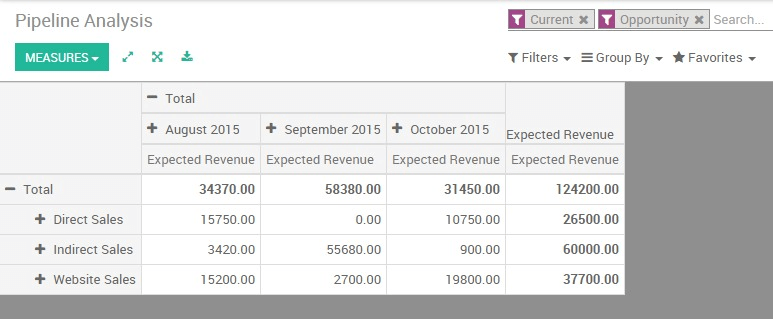

作为管理者，你需要不断的监测团队的表现，以帮助您为公司得到准确的相关决策。因此，** YuanCloud销售**的**报告**部分是一个非常重要的工具，可以帮助你得到更好地了解您的企业的优势，劣势和机会，并向您展示趋势和预测的关键指标，如机遇数量和他们的预期收入，团队的成交率或者对于一个产品或服务销售周期。
除了这些显而易见的跟踪销售漏斗的指标，还有一些其他的关键绩效指标，当用来判断销售漏斗是否成功时对您的公司是非常有价值的。
检查销售管道
您可以从**销售**模块中获得您的销售渠道业绩，通过点击：菜单选择：[UNKNOWN NODE title_reference]。默认情况下，报告组合了所有的机会，通过阶段(了解更多关于如何创建和自定义阶段阅读：DOC：'../销售团队/设置/组织_管道)和当月的预期收入。这份报告对**销售经理**定期审查销售渠道与相关销售团队是很完善的。通过访问这个基本的报告，你可以得到的实际销售业绩的快速概述。
您可以通过点击**计量**图标，添加很多额外的数据到您的报告：
预期收入
超过截止日期
延迟分配(创建线索和线索分配之间的平均时间)。
延迟关闭(线索分配和关闭之间的平均时间)
每个机会相互作用的次数。
等等

小技巧
通过点击**+**和** - 图标，可以向上和向下追溯您的报告，以改变显示信息的方式。例如，如果我想看到我的**直接销售**团队的预期收入，我需要点击**+**图标在垂直轴上加上**销售团队。
根据你想突出的数据，你可能需要在一个更直观的视图来显示您的报告。 YuanCloud**CRM** 可以让你通过简单的点击来改变你的报告为3种图形视图：饼图，条形图**和**线图。这些视图可以通过下面的截图中显示的高亮图标进行访问。

定制报表
您可以根据您要访问的**KPI**轻松地自定义您的分析报告(见：'../概述/主要概念/ terminologies`：DOC)。要做到这一点，使用**高级搜索视图**位于屏幕的右侧，通过点击搜索栏结尾处的放大镜图标按钮。此功能可以在你的报告上突出选定的数据。该**过滤**选项，显示某些类别的机遇时非常有用，同时通过**分组**选项提高您需要的报表的可读性。请注意，您可以通过任何现有的CRM字段进行过滤和分组，使您的自定义非常灵活和强大。

小技巧
您可以保存并再次使用定制的过滤，从**高级搜索视图**中点击**收藏**，然后**保存当前的搜索**。保存的过滤器将从**收藏**菜单访问。
这里是一些定制报告的例子，你可以用来监控你的销售业绩。
衡量你的每个销售员的现在的销售管道
从您的管道分析报告，首先要确保的**预期收益**选项是从**计量**下拉列表下选择。然后，使用**+**和** - [UNKNOWN NODE problematic]图标，并添加**销售员**和**阶段**做为你的垂直轴，并筛选所需的销售人员。然后在**图形视图中**单击图标通过阶段来显示你的销售人员的可视化表示。这种定制的报告可以让您轻松一览你的销售人员的销售活动。

按销售组预计月度收入
为了预计月度收入和衡量你的团队的短期业绩。你需要使用两个重要的指标：预期收入**和**预期结束。
从您的管道分析报告，首先要确保的**预期收益**选项是从**计量**下拉列表下选择。然后，使用**+**和** - 图标，并添加**销售员**和**阶段**做为你的垂直轴，并选择所需的销售组。然后在横向轴上，点击**+，选择**预期关闭**。
小技巧
为了保证你的预测的准确性和相关性，要确保你的销售人员为每个机会正确建立了预期关闭和预期收入。